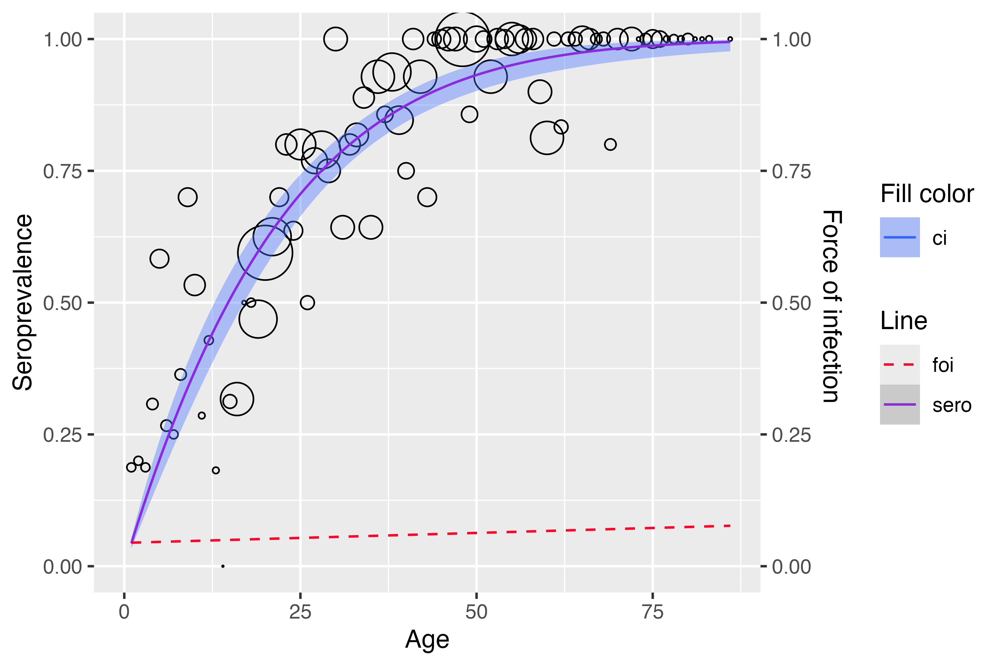
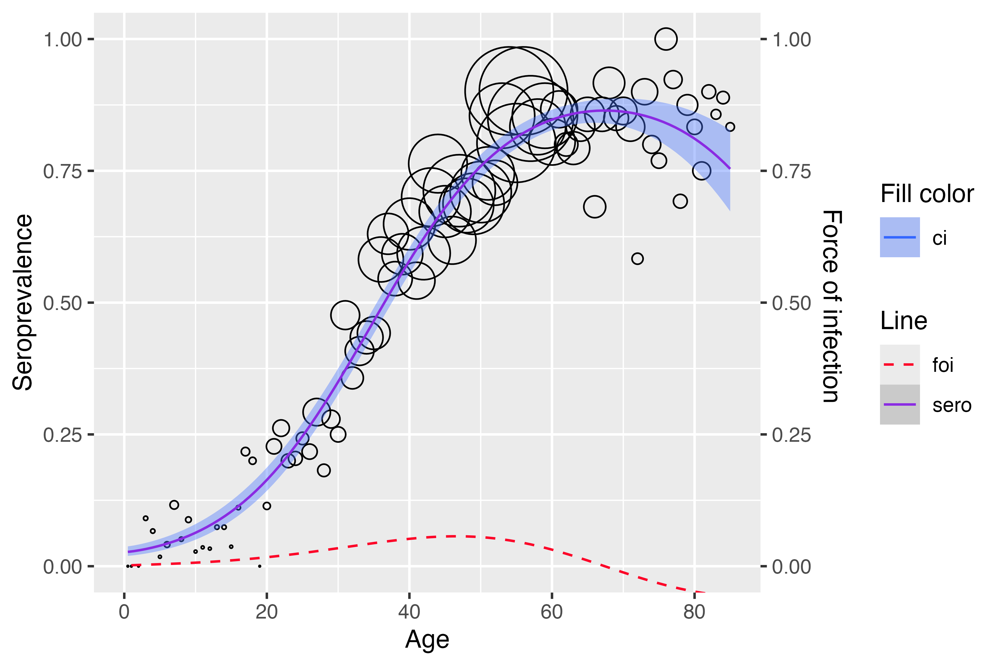

serosv: model infectious disease parameters from serosurveys
demo.RmdHere we demonstrate how to use serosv to estimate the
seroprevalence and force of infection using some built-in datasets.
Polynomial models
Use polynomial_model() to fit a polynomial model.
We will use the Hepatitis A data from Belgium 1993–1994 for this example.
a <- hav_bg_1964
neg <- a$tot -a$pos
pos <- a$pos
age <- a$age
tot <- a$totMuench’s model can be estimated by either defining k = 1
(a degree one linear predictor) or setting the
type = "Muench".
muench1 <- polynomial_model(age, pos, neg, k = 1)
summary(muench1$info)
#>
#> Call:
#> glm(formula = age(k), family = binomial(link = "log"), data = df)
#>
#> Coefficients:
#> Estimate Std. Error z value Pr(>|z|)
#> Age -0.050500 0.002457 -20.55 <2e-16 ***
#> ---
#> Signif. codes: 0 '***' 0.001 '**' 0.01 '*' 0.05 '.' 0.1 ' ' 1
#>
#> (Dispersion parameter for binomial family taken to be 1)
#>
#> Null deviance: Inf on 83 degrees of freedom
#> Residual deviance: 97.275 on 82 degrees of freedom
#> AIC: 219.19
#>
#> Number of Fisher Scoring iterations: 5
muench2 <- polynomial_model(age, pos, neg, type = "Muench")
summary(muench2$info)
#>
#> Call:
#> glm(formula = age(k), family = binomial(link = "log"), data = df)
#>
#> Coefficients:
#> Estimate Std. Error z value Pr(>|z|)
#> Age -0.050500 0.002457 -20.55 <2e-16 ***
#> ---
#> Signif. codes: 0 '***' 0.001 '**' 0.01 '*' 0.05 '.' 0.1 ' ' 1
#>
#> (Dispersion parameter for binomial family taken to be 1)
#>
#> Null deviance: Inf on 83 degrees of freedom
#> Residual deviance: 97.275 on 82 degrees of freedom
#> AIC: 219.19
#>
#> Number of Fisher Scoring iterations: 5We can plot any model with the plot() function.
plot(muench2)Similarly, we can estimate Griffith’s model.
gf_model <- polynomial_model(age, pos, neg, type = "Griffith")
plot(gf_model)
And Grenfell and Anderson’s model.
grf_model <- polynomial_model(age,pos,neg,type = "Grenfell")
plot(grf_model)Farrington’s model
Use farrington_model() to fit a Farrington’s model.
rubella <- rubella_uk_1986_1987
rubella$neg <- rubella$tot - rubella$pos
farrington_md <- farrington_model(
rubella$age, rubella$pos, rubella$tot,
start=list(alpha=0.07,beta=0.1,gamma=0.03)
)
plot(farrington_md)
Weibull model
Use weibull_model() to fit a Weibull model.
hcv <- hcv_be_2006[order(hcv_be_2006$dur), ]
dur <- hcv$dur
infected <- hcv$seropositive
wb_md <- weibull_model(
t = dur,
spos = infected
)
plot(wb_md)
Local estimation by polynomials
mump <- mumps_uk_1986_1987
a = age <- mump$age
pos <- mump$pos
tot <- mump$tot
y <- pos/totUse plot_gcv() to show GCV curves for the nearest
neighbor method (left) and constant bandwidth (right).

Use lp_model() to fit a local estimation by
polynomials.